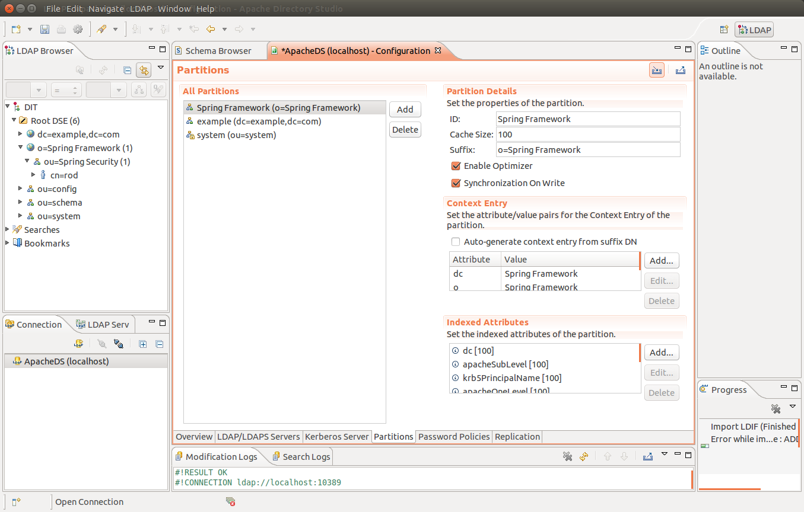

GeoMesa Authorizations¶
This tutorial demonstrates the ways you can apply data-level security to GeoMesa. It is a more advanced tutorial; you should already be familiar with the basics of GeoMesa and GeoServer. This tutorial targets Accumulo - GeoMesa also supports HBase visibilities through the same mechanisms, but the HBase configuration required is not covered here. See HBase Visibilities for more information on HBase.
In this tutorial, you will learn how to:
- Set visibilities on your data during ingestion into GeoMesa
- Apply authorizations to your queries through GeoMesa
- Implement user authorizations through the GeoMesa GeoServer plugin, using PKI certs to authenticate with GeoServer and LDAP to store authorizations
Background¶
Visibilities and Authorizations¶
One of the most powerful features of Accumulo is the implementation of cell-level security, using visibilities and authorizations. Data that is protected by visibilities can only be seen by users that have the corresponding authorizations. This allows for the fine-grained protection of data, based on arbitrary labels.
Note
Authorizations are distinct from table-level permissions, and operate at a much finer grain.
Public Key Infrastructure (PKI)¶
Public key infrastructure can be used to securely authenticate end users. In PKI, a certificate authority (CA) will issue digital certificates that verify that a particular public key belongs to a particular individual. Other users can then trust that certificate because it has been digitally signed by the CA.
In this tutorial, the keys used are not provided by trusted CAs. As such, it is necessary to import the CA’s certificate into the Java keystore, which allows Java (and by extension Tomcat) to trust any keys verified by the CA.
PKI solves the issue of authentication (who a user is) but not authorization (what a user can do). For this tutorial, authorization is provided by an LDAP server.
Prerequisites¶
Before you begin, you must have the following:
- Java JDK 1.8
- Apache Maven 3.5.2 or later
- a GitHub client
- an Accumulo 1.7.x, 1.8.x, 1.9.x or 2.0.x instance
- an Accumulo user that has both create-table and write permissions
- the GeoMesa distributed runtime installed for your instance
If you are not familiar with Accumulo authorizations, you should review the relevant Accumulo documentation, with more examples here.
About this Tutorial¶
This tutorial operates by inserting and then querying several thousand features. The features are inserted with visibility labels, and then queried with two different users to show how authorizations work.
Visibilities in GeoMesa¶
GeoMesa supports setting the visibility for each feature that is written. This can be set through user data in a simple feature:
import org.locationtech.geomesa.security.SecurityUtils;
...
SimpleFeature sf = ...
// set user data directly
sf.getUserData().put(SecurityUtils.FEATURE_VISIBILITY, "user&admin");
// alternatively, use static utility methods
SecurityUtils.setFeatureVisibilities(sf, "user", "admin");
For more information on feature-level visibilities, see Feature Level Visibility and Security.
Authorizations in GeoMesa¶
When performing a query, GeoMesa delegates the retrieval of authorizations to service providers that implement the following interface:
package org.locationtech.geomesa.security;
public interface AuthorizationsProvider {
/**
* Gets the authorizations for the current context. This may change over time
* (e.g. in a multi-user environment), so the result should not be cached.
*
* @return
*/
List<String> getAuthorizations();
/**
* Configures this instance with parameters passed into the DataStoreFinder
*
* @param params
*/
void configure(Map<String, Serializable> params);
}
When a GeoMesa DataStore is instantiated, it will scan for available
service providers. Third-party implementations can be enabled by placing
them on the classpath and including a special service descriptor file.
See the Oracle
Javadoc
for details on implementing a service provider.
The GeoMesa DataStore will call configure() on the
AuthorizationsProvider implementation, passing in the parameter map
from the call to DataStoreFinder.getDataStore(Map params). This
allows the AuthorizationsProvider to configure itself based on the
environment.
To ensure that the correct AuthorizationsProvider is used, GeoMesa
will throw an exception if multiple third-party service providers are
found on the classpath. In this scenario, the particular service
provider class to use can be specified by the following system property:
AuthorizationsProvider.AUTH_PROVIDER_SYS_PROPERTY = "geomesa.auth.provider.impl";
For simple scenarios, the set of authorizations to apply to all queries
can be specified when creating the GeoMesa DataStore by using the
geomesa.security.auths configuration parameter. This will use the
DefaultAuthorizationsProvider implementation provided by GeoMesa.
// create a map containing initialization data for the GeoMesa data store
Map<String, String> configuration = new HashMap<>();
configuration.put("geomesa.security.auths", "user,admin");
DataStore dataStore = DataStoreFinder.getDataStore(configuration);
If there are no AuthorizationsProviders found on the classpath,
and the geomesa.security.auths parameter is not set, GeoMesa will default to using
the authorizations associated with the underlying Accumulo connection
(i.e. the accumulo.user configuration value).
Warning
This is not a recommended approach for a production system.
In addition, please note that the authorizations used in any scenario cannot exceed the authorizations of the underlying Accumulo connection.
Create Visibilities in Accumulo¶
This tutorial requires that you specify a visibility string and the associated
authorizations string. The visibilities can be anything valid for your Accumulo instance.
For the rest of this exercise, we are going to assume the visibility string is user.
You can see the visibilities that are currently enabled for your user through the Accumulo shell:
$ accumulo shell -u <username> -p <password>
Shell - Apache Accumulo Interactive Shell
-
- version: 1.8.1
- instance name: xxxxx
- instance id: xxxxxxxx-xxxx-xxxx-xxxx-xxxxxxxxxxxx
-
- type 'help' for a list of available commands
-
myuser@mycloud> getauths
user,admin
If your user does not already have authorizations, you can add them
through the Accumulo shell with the addauths command:
myuser@mycloud> getauths
user
myuser@mycloud> addauths -s admin -u myuser
myuser@mycloud> getauths
user,admin
Note
A user cannot set authorizations unless the user has the System.ALTER_USER permission.
After running the tutorial code, you should see a visibility label in square brackets when you scan the index tables through the Accumulo shell:
myuser@mycloud> scan -t mytable_id
\x0100700230-fdfe-422e-b4d1-8072db6f3dda SFT: [user] \x02\x00\x00\x01b00700230...
Download and Build the Tutorial¶
Pick a reasonable directory on your machine, and run:
$ git clone https://github.com/geomesa/geomesa-tutorials.git
$ cd geomesa-tutorials
Warning
Make sure that you download or checkout the version of the tutorials project that corresponds to your GeoMesa version. See About Tutorial Versions for more details.
To ensure that the quick start works with your environment, modify the pom.xml
to set the appropriate versions for Accumulo, Hadoop, etc.
For ease of use, the project builds a bundled artifact that contains all the required dependencies in a single JAR. To build, run:
$ mvn clean install -pl geomesa-tutorials-accumulo/geomesa-tutorials-accumulo-authorizations -am
Run the Tutorial¶
On the command line, run:
$ java -cp geomesa-tutorials-accumulo/geomesa-tutorials-accumulo-authorizations/target/geomesa-tutorials-accumulo-authorizations-${geomesa.version}.jar \
org.geomesa.example.accumulo.auths.AuthorizationsTutorial \
--accumulo.instance.id <instance> \
--accumulo.zookeepers <zookeepers> \
--accumulo.user <user> \
--accumulo.password <password> \
--accumulo.catalog <table> \
--geomesa.security.auths <authorizations> \
--visibilities <visibilities>
where you provide the following arguments:
<instance>the name of your Accumulo instance<zookeepers>your Zookeeper nodes, separated by commas<user>the name of an Accumulo user that has permissions to create, read and write tables<password>the password for the previously-mentioned Accumulo user<table>the name of the destination table that will accept these test records. This table should either not exist or should be empty<visibilities>the visibilities label to apply to the data, e.g.user<authorizations>the authorizations associated with the visibilities you selected, e.g.user. Make sure that your Accumulo user has the authorization you use
Warning
If you have set up the GeoMesa Accumulo distributed
runtime to be isolated within a namespace (see
Namespace Install) the value of <table>
should include the namespace (e.g. myNamespace.geomesa).
Optionally, you can also specify that the tutorial should delete its data upon completion. Use the
--cleanup flag when you run to enable this behavior.
Once run, you should see the following output:
Loading datastore
Loading datastore
Creating schema: GLOBALEVENTID:String,Actor1Name:String,Actor1CountryCode:String,Actor2Name:String,Actor2CountryCode:String,EventCode:String,NumMentions:Integer,NumSources:Integer,NumArticles:Integer,ActionGeo_Type:Integer,ActionGeo_FullName:String,ActionGeo_CountryCode:String,dtg:Date,geom:Point
Generating test data
Writing test data
Wrote 2356 features
Executing query with AUTHORIZED data store: auths are 'user'
Running query dtg BETWEEN 2017-12-31T00:00:00+00:00 AND 2018-01-02T00:00:00+00:00 AND BBOX(geom, -83.0,33.0,-80.0,35.0)
01 719024887=719024887|DEPUTY||||010|4|1|4|3|Abbeville County, South Carolina, United States|US|2017-12-31T00:00:00.000Z|POINT (-82.4665 34.2334)
02 719024893=719024893|UNITED STATES|USA|DEPUTY||010|6|1|6|3|Abbeville County, South Carolina, United States|US|2017-12-31T00:00:00.000Z|POINT (-82.4665 34.2334)
03 719024895=719024895|UNITED STATES|USA|EMPLOYEE||010|2|1|2|3|Ninety Six, South Carolina, United States|US|2017-12-31T00:00:00.000Z|POINT (-82.024 34.1751)
04 719025110=719025110|||UNITED STATES|USA|051|6|1|6|3|Edgefield, South Carolina, United States|US|2018-01-01T00:00:00.000Z|POINT (-81.9296 33.7896)
05 719025605=719025605|SCHOOL||ADMINISTRATION||043|16|1|16|3|Greenwood County, South Carolina, United States|US|2018-01-01T00:00:00.000Z|POINT (-82.1165 34.1668)
06 719025410=719025410|POLICE||||193|1|1|1|3|Ninety Six National Historic Site, South Carolina, United States|US|2018-01-01T00:00:00.000Z|POINT (-82.0193 34.146)
07 719027188=719027188|UNITED STATES|USA|UNITED STATES|USA|193|1|1|1|3|Ware Shoals, South Carolina, United States|US|2018-01-01T00:00:00.000Z|POINT (-82.2468 34.3985)
08 719024941=719024941|||DEPUTIES||090|8|1|8|3|Edgewood, South Carolina, United States|US|2018-01-01T00:00:00.000Z|POINT (-80.6137 34.2874)
09 719024950=719024950|||DEPUTIES||190|8|1|8|3|Edgewood, South Carolina, United States|US|2018-01-01T00:00:00.000Z|POINT (-80.6137 34.2874)
10 719024894=719024894|UNITED STATES|USA|DEPUTY||010|2|1|2|3|Abbeville County, South Carolina, United States|US|2017-12-31T00:00:00.000Z|POINT (-82.4665 34.2334)
Returned 39 total features
Executing query with UNAUTHORIZED data store: auths are ''
Running query dtg BETWEEN 2017-12-31T00:00:00+00:00 AND 2018-01-02T00:00:00+00:00 AND BBOX(geom, -83.0,33.0,-80.0,35.0)
Returned 0 total features
Done
The first query should return 1 or more results. The second query should return 0 results, since they are hidden by visibilities.
Looking at the Code¶
The source code is meant to be accessible for this tutorial. The main logic is contained in
org.geomesa.example.accumulo.auths.AuthorizationsTutorial in the
geomesa-tutorials-accumulo/geomesa-tutorials-accumulo-authorizations module. Some relevant methods are:
createDataStoreuses a system property to control the visibility provider used by each data storequeryFeaturesrun the same query with each data store
// get an instance of the data store that uses our authorizations provider,
// that always returns empty auths
System.setProperty(AuthorizationsProvider.AUTH_PROVIDER_SYS_PROPERTY,
EmptyAuthorizationsProvider.class.getName());
unauthorizedDatastore = super.createDataStore(params);
// get an instance of the data store that uses the default authorizations provider,
// which will use whatever auths the connector has available
System.setProperty(AuthorizationsProvider.AUTH_PROVIDER_SYS_PROPERTY,
DefaultAuthorizationsProvider.class.getName());
return super.createDataStore(params);
This code snippet shows how you can specify the
AuthorizationProvider to use with a system property. The
DefaultAuthorizationsProvider class is provided by GeoMesa, and used
when no other implementations are found.
The EmptyAuthorizationsProvider class is included in the tutorial. The EmptyAuthorizationsProvider
will always return an empty Authorizations object, which means that any data stored with visibilities
will not be returned.
There is a more useful implementation of AuthorizationsProvider that
will be explored in more detail in the next section, the
LdapAuthorizationsProvider.
Applying Authorizations and Visibilities to GeoServer Using PKIS and LDAP¶
This section will show you how to configure GeoServer to authenticate users with PKIs, use LDAP to store authorizations, and apply authorizations on a per-user/per-query basis.
Basic user authentication will take place via user certificates. Each user will have their own public/private key pair that uniquely identifies them.
User authorizations will come from LDAP. Once a user’s identity has been verified via PKI, we will look up the user’s details in LDAP.
Once we have a user’s authentication and authorizations, we will apply
them to the GeoMesa query using a custom AuthorizationsProvider
implementation.
Run GeoServer in Tomcat¶
Note
If you are already running GeoServer in Tomcat, you can skip this step.
GeoServer ships by default with an embedded Jetty servlet. In order to use PKI login, we need to install it in Tomcat instead.
Download and install Tomcat 7.
Create an environment variable pointing to your tomcat installation (you may want to add this to your bash init scripts):
$ export CATALINA_HOME=/path/to/tomcat
If you want to reuse your existing GeoServer configuration, create an environment variable pointing to your GeoServer data directory (you may want to add this to your shell initialization scripts):
$ export GEOSERVER_DATA_DIR=/path/to/geoserver/data_dir
Copy the GeoServer webapp from the GeoServer distribution into the tomcat servlet:
$ cp -r /path/to/geoserver/webapps/geoserver/ $CATALINA_HOME/webapps/Increase the memory allocated to Tomcat, which you will need for running complex queries in GeoServer (the values here may not be applicable for every installation):
$ cd $CATALINA_HOME/bin $ echo 'CATALINA_OPTS="-Xmx2g -XX:MaxPermSize=128m"' >> setenv.sh
Start Tomcat, either as a service or through the startup scripts, and ensure that GeoServer is available at http://localhost:8080/geoserver/web/.
Create the Accumulo Data Store and Layer in GeoServer¶
Log into GeoServer using your user and password credentials. Click “Stores” and “Add new Store”.
Select the Accumulo (GeoMesa) vector data source, and fill in the required parameters.
Basic store info:
workspacethis is dependent upon your GeoServer installationdata source namepick a sensible name, such asgeomesa_authorizationsdescriptionthis is strictly decorative;GeoMesa authorizations tutorial
Connection parameters:
- these are the same parameter values that you supplied on the command line when you ran the tutorial; they describe how to connect to the Accumulo instance where your data reside
geomesa.security.authsleave this field empty
Click “Save”, and GeoServer will search your Accumulo table for any GeoMesa-managed feature types.
Publish the Layer¶
GeoServer should recognize the gdelt-secure feature type, and
should present that as a layer that can be published. Click on the
“Publish” link.
You will be taken to the “Edit Layer” screen. You will need to enter values for the data bounding boxes. In this case, you can click on the link to compute these values from the data.
Click on the “Save” button when you are done.
Configure GeoServer for PKI Login¶
Follow the instructions in the GeoServer documentation in order to enable PKI login to GeoServer.
In the step where you add the ‘cert’ filter to the ‘Filter Chains’, also add it to the ‘rest’, ‘gwc’ and ‘default’ chains (in addition to web).
We will be using the ‘rod’ and ‘scott’ users, so be sure to install those into your browser.
Warning
Make sure that you click the ‘Save’ button on all GeoServer screens. Otherwise, your changes may be lost.
Verify that the changes were applied by re-starting Tomcat, and checking that the ‘web’ filter chain has the ‘cert’ filter selected:
Web Filter Panel
Install an LDAP Server for Storing Authorizations¶
Note
If you are already have an LDAP server set up, you can skip this step.
- Download and install ApacheDS
- Either run as a service, or run through the start scripts:
$ cd apacheds-2.0.0-M20/bin
$ chmod 755 *.sh
$ ./apacheds.sh
Configure LDAP for Storing Authorizations¶
We want to configure LDAP with a user to match the Spring Security PKIs we are testing with. The end result we want is to create the following user:
DN: cn=rod,ou=Spring Security,o=Spring Framework
In order to do that, we will use Apache Directory Studio.
- Download and run Apache Directory Studio.
- Connect to the your LDAP instance (ApacheDS), using the instructions here (note: you do not need to change the password unless you want to).
- Create a partition for our data:
- Right-click the ‘ApacheDS (localhost)’ entry under the ‘Connection’ tab and select ‘Open Configuration’.
- Click ‘Advanced Partitions Configuration…’.
- Click ‘Add’.
- Set the ID field to be ‘Spring Framework’.
- Set the Suffix field to be ‘o=Spring Framework’.
- Uncheck ‘Auto-generate context entry from suffix DN’.
- Set the following attributes in Context Entry:
- objectclass: extensibleObject
- objectclass: top
- objectclass: domain
- dc: Spring Framework2
- o: Spring Framework2
- Hit Ctrl-s to save the partition. 
- Restart ApacheDS. Otherwise the partition will not be available and the LDIF import will fail.
- Load the following LDIF file, which will create the Spring Security
OU and the ‘rod’ user:
spring-security-rod.ldif- Right-click the ‘Root DSE’ node in the LDAP browser, and select ‘Import->LDIF import…’
Test LDAP Connection Using Tutorial Code¶
The tutorial code includes an AuthorizationsProvider implementation
that will connect to LDAP to retrieve authorizations, in the class
com.example.geomesa.auths.LdapAuthorizationsProvider.
The provider will configure itself based on the
geomesa-ldap.properties file on the classpath (under
src/main/resources):
# ldap connection properties
java.naming.factory.initial=com.sun.jndi.ldap.LdapCtxFactory
java.naming.provider.url=ldap://localhost:10389
java.naming.security.authentication=simple
java.naming.security.principal=uid=admin,ou=system
java.naming.security.credentials=secret
# the ldap node to start the query from
geomesa.ldap.search.root=o=Spring Framework
# the query that will be applied to find the user's record
# the '{}' will be replaced with the common name from the certificate the user has logged in with
geomesa.ldap.search.filter=(&(objectClass=person)(cn={}))
# the ldap attribute that holds the comma-delimited authorizations for the user
geomesa.ldap.auths.attribute=employeeType
The default file included with the tutorial will connect to the LDAP instance we set up in the previous steps. If you are using a different LDAP configuration, you will need to modify the file appropriately.
The LdapAuthorizationsProvider will look for a particular LDAP
attribute that stores the user’s authorizations in a comma-delimited
list. For simplicity, in this tutorial we have re-purposed an existing
attribute, employeeType. The attribute to use can be modified
through the property file.
When we inserted the ‘rod’ record into LDAP, we set his employeeType
to ‘user,admin’, corresponding to our Accumulo authorizations. If you
are using different authorizations, you will need to update the
attribute to match.
The tutorial code includes a test case for connecting to LDAP, in the
class LdapAuthorizationsProviderTest.
Once you have modified geomesa-ldap.properties to connect to your
LDAP, you can test the connection by running this test class:
$ java -cp geomesa-tutorials-accumulo/geomesa-tutorials-accumulo-authorizations/target/geomesa-tutorials-accumulo-authorizations-${geomesa.version}.jar \
org.geomesa.example.accumulo.auths.LdapAuthorizationsProviderTest rod
The argument to the program (‘rod’) is the user to retrieve authorizations for. You should get the following output:
Checking auths from LDAP for user 'rod'
Retrieved auths: user,admin
Installing the LDAP AuthorizationProvider in GeoServer¶
In order to use the LdapAuthorizationsProvider, we need to install
it as a service provider into GeoServer, where it will automatically be
picked up by GeoMesa.
The tutorial code includes a service provider registry in the
META-INF/services folder. By default, the provider class is
specified as the EmptyAuthorizationsProvider.
Ensure that your LDAP configuration is correct by running
LdapAuthorizationsProviderTest, as described above.Change the provider class in the single line file
src/main/resources/META-INF/services/org.locationtech.geomesa.security.AuthorizationsProviderto beorg.geomesa.example.accumulo.auths.LdapAuthorizationsProviderRebuild the tutorial JAR and install the unshaded original jar in GeoServer:
$ mvn clean install -pl geomesa-tutorials-accumulo/geomesa-tutorials-accumulo-authorizations $ cp geomesa-tutorials-accumulo/geomesa-tutorials-accumulo-authorizations/target/geomesa-tutorials-accumulo-authorizations-${geomesa.version}.jar \ /path/to/tomcat/webapps/geoserver/WEB-INF/lib/
Note
We want to use the unshaded jar since all the required dependencies are already installed in GeoServer.
- Restart GeoServer (or start it if it is not running).
At this point you should have everything configured and in-place.
Verifying the LDAP Authorizations in GeoServer¶
In order to verify that the authorizations are working correctly, execute a query against GeoMesa by calling the WMS provider over HTTPS in your browser:
https://localhost:8443/geoserver/wms?service=WMS&version=1.1.0&request=GetMap&layers=geomesa:gdelt_auths&styles=&bbox=31.6,44,37.4,47.75&width=1200&height=600&srs=EPSG:4326&format=application/openlayers
When prompted, select the ‘rod’ certificate.
You should see the normal data come back, with many red points indicating the data:
Authorized Results
Now try the same query, but use the ‘scott’ certificate. This time, there should be no data returned, as the ‘scott’ user does not have any authorizations set up in LDAP.
Note
A simple way to use different certificates at once is to open multiple ‘incognito’ or ‘private’ browser windows.